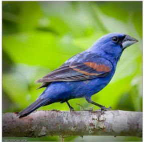

先说结论。它和通用视觉自监督的关系在于：用冻结 MLLM 的属性级判断来训练视觉 encoder，比传统 scalar metric loss 更细。 中高相关；详见方法、贡献和实验边界。
Figureure 2 · : OverviewFigure 2: Overview. SAGA uses a frozen MLLM as an attribute-aware supervisor for deep metric learning. For an image pair $\left( \mathbf { I } _ { a } , \mathbf { I } _ { b } \right)$ , the trainable vision encoder $f _ { \theta }$ produces patch tokens $\mathbf { X } _ { a } , \mathbf { X } _ { b } .$ which feed three losses with complementary roles. (1) The tokens and a comparison prompt $T _ { \mathrm { i n s t } }$ t are fed to the frozen MLLM $p _ { \psi } ,$ which samples G responses ending in a same/different-class verdict; the GRPO loss $\mathcal { L } _ { \mathrm { G R P O } }$ rewards correct verdicts and back-propagates through $p _ { \psi }$ into $f _ { \theta } ,$ pushing it to encode the discriminative attributes the MLLM relied on when making correct predictions. (2) The MLLM’s attention α from the same forward pass reveals which patch tokens the MLLM attended to while describing each image’s attributes; on correct rollouts, the per-image mean attribute-attention α¯ is distilled into the pooler’s attention $\beta$ via ${ \mathcal { L } } _ { \mathrm { K I } }$ , encouraging $c _ { \phi }$ to pool over those regions when forming embeddings $z _ { a } , z _ { b } .$ . (3) The pooler $c _ { \phi }$ aggregates the tokens into embeddings $\mathbf { z } _ { a } , \mathbf { z } _ { b } ,$ , which a deep metric learning loss $\mathcal { L } _ { \mathrm { D M L } }$ shapes for nearest-neighbor search. The MLLM is frozen throughout and discarded at inference.这张图概括 Beyond Scalar Distances 的整体方法流程。阅读时先看模块之间传递的训练信号，再看作者如何把目标拆成可优化的子问题。

Image 2: Blue Grosbeak Figure 1: Using only class labels for images reduces supervision toImage 2: Blue Grosbeak Figure 1: Using only class labels for images reduces supervision to a scalar, whereas an MLLM resolves it into attributes. A class-label loss collapses the difference between two very similarlooking bird species into a single ‘different’ scalar, pushing every embedding dimension apart, even those potentially encoding shared attributes like blue plumage and leg color. A frozen MLLM, by contrast, can identify which attributes match and include them in reaching the same-/different-species verdict. Our method, SAGA, harnesses this by rewarding correct verdicts and reinforcing precisely those feature components (directions) that the MLLM’s discrimination relies on, while leaving shared-attribute directions untouched.这张图来自论文 PDF 的结构化抽取。当前用于辅助理解 Beyond Scalar Distances 的方法或实验，请结合正文精读段落一起看。
核心问题
它和通用视觉自监督的关系在于：用冻结 MLLM 的属性级判断来训练视觉 encoder，比传统 scalar metric loss 更细。
方法拆解
用冻结 MLLM 的属性级判断来训练视觉 encoder，比传统 scalar metric loss 更细